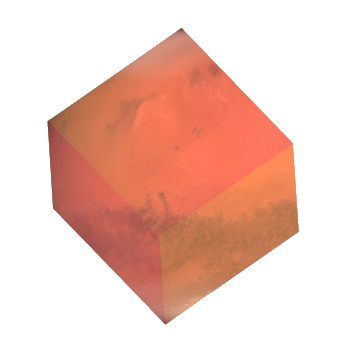

A
S
T
R
O
B
O
X

Hello World! Welcome to
AstroBox
Scroll Down
Scoop
Used to pick up the top-most layer of the Martian surface.
Drive Tube
Used to take out samples of the Martian regolith from beneath the top-most layer.
Rake
Used to collect larger than pea-sized rocks.
Tongs
Used to pick up loose rocks.
Extension Rod
Used to operate scoop, rake and drive tubes.
Hammer
Used to break off larger rocks and/or regolith pieces.
Sample Bag
Used to store dust samples.
Sample Container
Used to store regolith samples.
Handheld Digital Weighing Scale
Used to weigh sample bags and containers.
Sample Box
Used to store sample bags and containers.
Scoop
Drive Tube
Rake
Tangs
Extension Rod
Hammer
Sample Bag
Sample Container
Weighing Scale
Sample Box
 Scroll Down
Scroll Down
Scroll Down
Scroll Down
Scroll Down
Scroll Down